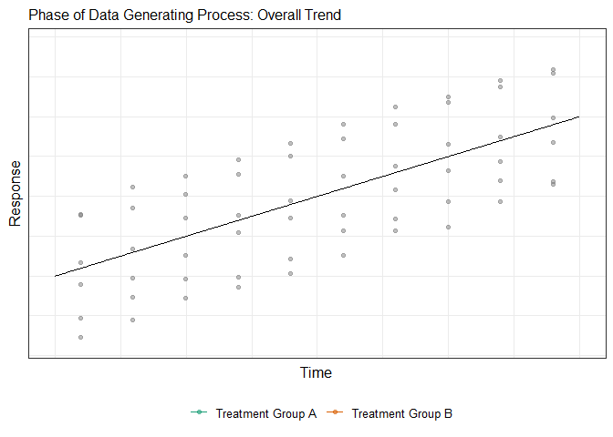

14 Mixed Effects Models
Chapter 13 discussed how studies with repeated measures induce a correlation structure on the data. In this chapter and the next, we consider two approaches for modeling repeated measures data. In this chapter, we focus on a flexible modeling framework that builds up the data generating process in stages, recognizing the relationship between observations at each stage.
While we discuss these methods in the context of a linear model, these methods can be extended to other modeling frameworks.
14.1 Partitioning Variability
In order to motivate the modeling approach developed in this chapter, we first discuss the various reasons the value of the response is not the same for all observations. We can view regression models as trying to explain why the response values differ across observations. The more reasons we can put in place, the more variability we are able to explain. By naming these sources of variability, we are able to construct a corresponding model by building it up in stages.
Statistical models partition the variability in the response.
While our discussion generalizes to many types of studies, it helps to imagine measuring the response of interest at several points across time for several subjects (Figure 14.1). For example, imagine tracking a child’s weight as they age. We can imagine an overall trend — as a child ages, their weight increases.

Further, we may want to allow this trend to depend on a key factors (or other covariates). For example, we might posit that the child’s weight is higher for those in one medical treatment group compared to another. Our research questions are generally at this stage — characterizing the impacts of fixed effects on the response (in this case, time and treatment groups).
Of course, the trajectory of any particular subject (across their repeated observations) will differ from the overall trajectory (and differ from one subject to another). Some children naturally have larger or smaller weights than others. At any point in time, a subject may have a trajectory that is above average; others will have a trajectory that is below average. This vertical shift or “bump” in the position of the trajectory captures the biological variation between subjects. All observations measured on the same subject will share a similar “bump,” creating a relationship between observations. This between-subject variability is primarily what contributes to the correlation structure in the response.
For any subject, the actual response is likely to not lie directly on their individual trajectory. For example, a child’s growth may not follow a smooth growth-curve even if we model it in that way. This is the result of natural biological fluctuations within the subject. As such, observations measured close together in time can tend to be more alike than those measured further apart in time. As an example, if a child’s weight is slightly above their individual trajectory at this moment, it is likely to be above their trajectory an hour from now. However, if a child’s weight is slightly above their individual trajectory at this moment, it does not really tell us anything about whether their weight will be slightly above or below their individual trajectory a year from now. Therefore, magnitudes of this within-subject source of variability are thought to be related when close in time and independent otherwise.
Finally, it is unlikely that the observed response is equal to the actual response as a result of measurement error. The weight of a child will be subject to the accuracy and precision of the scale, whether the subject was measured with or without clothing and shoes, etc. The magnitude of such errors are thought to be independent of one another.
What we are seeing in this discussion is that the “error” term we considered in the linear model of the previous units is actually the result of several sources of variability.
Observations from the same block tend to be high or low (relative to the average) together. These blocks could be due to repeated measures on the same subject or observations clustered together due to some other characteristic. While this “between-subject” variability induces a correlation structure among observations from the same block, it is common to think that observations from different blocks are independent.
Observations from within a block recorded close together in time are likely to be related, inducing a “within-subject” correlation. It is common to think that observations far apart in time are independent.
Taking into account all sources of variability can result in a very complex model (and this continues to be an area of active research). In practice, we can make simplifying assumptions about the data generating process that allows us to rely on a simpler construct. For example, we may assume the data are collected far enough apart in time so that the within-subject correlation is negligible.
14.2 Model Formulation
While our discussion above illustrates how the various sources of error/variability build on one another to create the observed data, we really worked backward. That is, we started with the overall trend and decomposed it to arrive at the data observed. When we model, we want to work in the other direction, building the model in stages. This is known as a hierarchical model.
Definition 14.1 (Hierarchical Model) A hierarchical model breaks the data generating process into smaller stages and posits a model for each stage. The stages are determined by defining a hierarchy of units and thereby capturing the sources of variability.
While a hierarchical model could have an arbitrary number of stages, for a large number of applications, it suffices to consider the model being composed of only two stages: the individual-level (or within subject) and the population-level (or between subject).
Remember, repeated measures can be the result of clusters of observations; so, the term “within-subject” should be interpreted as “within-block.”
The individual-level stage posits a model for the observations within a subject (or block). That is, this model characterizes the relationship between the response and only those variables that change across observations on a single subject. Conceptually, this is the model we would construct if we only had data for a single subject. As a result, this model only includes “within-individual” predictors — those that vary within a subject. In biological settings, this is most common when measurements are taken across time; for example, following a child over several years, the weight and height of the child will change. However, it is unlikely that the highest level of education achieved by the child’s parents is likely to change over this time frame. Therefore, when modeling the weight of the child, time and the child’s height would be within-individual predictors, and the education level of the parents would be a “between-subject” predictor — those that change from one subject to another but remain constant for all observations from the same subject.
Definition 14.2 (Individual-Level Model) The individual-level model characterizes the response for the \(i\)-th subject (or block) only.
Consider the study to investigate the impact of four methods of delivering a pancreatic enzyme supplement (Example 13.2). The individual-level model would characterize the fecal fat (response) observed within each subject. There are only a few variables in this data: the fecal fat, the supplement type, and the participant identification. The fecal fat is the response. The supplement type is the factor of interest, and in this case, happens to be an individual-level variable as it changes within each participant.
Our individual-level model can make use of only the individual-level predictors; in this case, it can only depend on the supplement type. We would like to allow the fecal fat observed to depend on the type of supplement; we also acknowledge the potential for measurement error. This leads to a model of the form
\[(\text{Fecal Fat})_i = \alpha_{0,i} + \alpha_{1,i} (\text{Tablet})_{i,j} + \alpha_{2,i} (\text{Coated})_{i,j} + \alpha_{3,i} (\text{Uncoated})_{i,j} + \varepsilon_{i,j} \tag{14.1}\]
where here \(i\) is indexing the subject and \(j\) the observation within each subject. If we only had data on a single subject, we would compare the fecal fat for this subject under each of the supplement types; that is exactly what Equation 14.1 does (while allowing for measurement error). We must describe the distribution of random variables, such as the error term in Equation 14.1, that appear in the model. It is common to assume these errors are independent and follow a Normal distribution; specifically,
\[\varepsilon_{i,j} \stackrel{\text{IID}}{\sim} N\left(0, \sigma^2\right).\]
What is unique about this model formulation is at this point, the parameters themselves (the \(\alpha\) terms in Equation 14.1) are allowed to vary across subjects. How those vary is determined by the population-level model.
Definition 14.3 (Population-Level Model) The population-level model characterizes how the parameters of the individual-level model vary across subjects (or blocks) in the population.
While we do not actually proceed in this way, conceptually, the population-level model is constructed by (a) computing the parameter estimates from the individual-level model, (b) treating those estimates as responses in a new model, and (c) modeling those estimates as functions of between-subject predictors.
This second-stage model makes use of between-subject predictors. For Example 13.2, the participant identification is the random effect and is constant across all observations from the same subject (and is therefore a between-subject variable). To construct the population-level model, we need to think about how the \(\alpha\) terms from Equation 14.1 might (if at all) vary across individuals in the population. There is no single answer to how this model is constructed; instead, the model should communicate the researchers’ beliefs about the data generating process. For example, suppose we are willing to believe the following:
- The delivery of the supplement affects each individual in a similar way. That is, if the tablet is best for one person, we believe it is best for everyone. And, the only reason it may not appear this way in the observed data is due to random noise (which we captured by \(\varepsilon_{i,j}\) in the individual-level model).
- The baseline level of fat in each person is fundamentally different. That is, due to diet, genetics etcetera, each person has a unique level of fat. Some people have more than others, and this amount varies randomly in the population, but it is centered on some value.
Again, we might disagree on whether these two assumptions are appropriate, but once we agree on these assumptions, it guides the model. The first assumption above says that the differences due to the supplement types (the treatment effects) in the individual-level model \(\left(\alpha_{1,i}, \alpha_{2,i}, \alpha_{3,i}\right)\) are the same for every individual. That is,
\[ \begin{aligned} \alpha_{1,i} &= \beta_1 \\ \alpha_{2,i} &= \beta_2 \\ \alpha_{3,i} &= \beta_3, \end{aligned} \tag{14.2}\]
where \(\beta_1, \beta_2, \beta_3\) are unknown parameters. These parameters capture the difference in the fecal fat, on average, between supplement types.
The second assumption says that the the baseline level of fat under the placebo arm, captured by the intercept term \(\alpha_{0,i}\) in Equation 14.1, differs across subjects randomly. That is,
\[ \begin{aligned} \alpha_{0,i} &= \beta_0 + b_{0, i} \\ b_{0,i} &\sim N\left(0, \sigma^2_0\right) \end{aligned} \tag{14.3}\]
where \(\beta_0\) and \(\sigma^2_0\) are unknown parameters. While \(\beta_0\) captures the overall fecal fat, on average, under the placebo arm, \(\sigma^2_0\) captures the variability in the average fecal fat across individuals in the population taking the placebo. Together, Equation 14.2 and Equation 14.3 create the population-level model.
In this population-level model, we are allowing the intercept term to have a random component as a result of the variability across subjects (hence the name “random effect” for the subject identifier in this case). However, the impact of the treatments are fixed for all subjects (hence the name “fixed effect” for the factor of interest in this case).
Technically, the individual-level and population-level models together fully specify the hierarchical model for the data generating process. However, combining these into a single equation can be instructive. Substituting the population-level model (Equation 14.2 and Equation 14.3) into the individual-level model (Equation 14.1), we have that the response is characterized by
\[ \begin{aligned} (\text{Fecal Fat})_{i,j} &= \left(\beta_0 + b_{0,i}\right) + \beta_1 (\text{Tablet})_{i,j} + \beta_2 (\text{Coated})_{i,j} + \beta_3 (\text{Uncoated})_{i,j} + \varepsilon_{i,j} \\ \varepsilon_{i,j} &\stackrel{\text{IID}}{\sim} N\left(0, \sigma^2\right) \\ b_{0,i} &\stackrel{\text{IID}}{\sim} N\left(0, \sigma^2_0\right). \end{aligned} \tag{14.4}\]
The idea that some of our effects (coefficients) in a model are fixed (not allowed to vary across individuals) and some are random (allowed to vary across individuals) leads to our description of this approach as a mixed-effects model.
Definition 14.4 (Mixed-Effects Model) A mixed-effects model denotes a hierarchical model for which some effects are fixed (not allowed to vary across subjects) and others are random (allowed to vary across subjects).
Specifying the mixed-effects model as a single model can help with specifying the model in statistical software.
Despite the fully parametric nature of a mixed-effects model, inference on the fixed effects is generally carried out using large-sample theory. Generally, we do not test the random effects; instead, we leave them in the model to capture the correlation we believe is present in the data. Recall that we concluded there was no evidence (p = 0.168) the average fecal fat was associated with the type of supplement when we ignored the correlation in the data. However, if we account for the correlation using the mixed-effects model in Equation 14.4, we have strong evidence (p < 0.001) the average fecal fat differs for at least one of the supplement types. Correctly accounting for the correlation structure resulted in a more powerful analysis.
Proper inference in mixed-effects models is debated among statisticians. The two leading statistical software packages (SAS and R) disagree on implementation. SAS provides default p-values for each fixed-effect parameter; R does not.
Constructing a mixed-effects model can feel overwhelming at times. We urge you to keep the following ideas in mind:
- Construct a model that preserves the behavior at the individual-level. This is generally the stage in which we have more scientific intuition.
- Allow the behavior to vary across subjects, which corresponds to allowing the parameters to vary. Choose which parameters to vary based on discipline expertise.
- The variation in the parameters naturally induces a correlation structure in the data.
In the above discussion, we considered the error term at the individual-level model to be independent and identically distributed. In theory, we could allow a correlation to exist here as well; for example, we may want observations closer together in time to be correlated. This can dramatically increase the complexity of the model fit and often requires custom software.
Before closing this chapter, we address the conditions of a mixed-effects model. We have the same conditions on the individual-level model as we do in classical regression models (Definition 4.3). Further, those conditions can be assessed and relaxed in the same way. However, care must be taken if bootstrapping is used to relax the Normality condition; often times, the bootstrap algorithms need to be custom-written to take advantage of the hierarchy in the data. The conditions on the random effects are not easily assessed. In particular, the distributional assumption of Normality for the random effects is rarely questioned.
In this text, our emphasis is on understanding and interpreting such models. Other texts consider the theoretical underpinnings of such model in more detail.